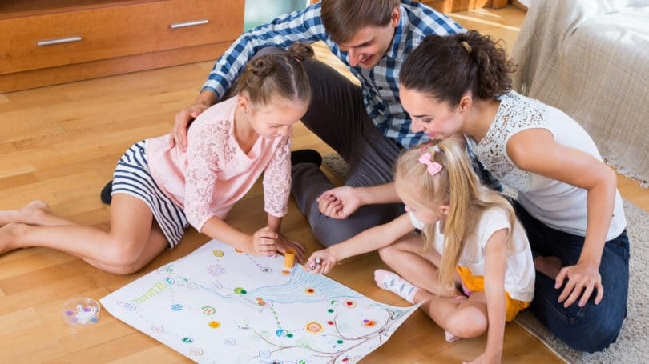

This is probably my all-time favorite card game, and I don’t think that I have ever won even once. It is similar to regular war in that the object of the game is to take possession of all the cards in the deck. This game could last 5 minutes or 5 hours depending on the course of the game and the aggressiveness of the players. Read the rules for the game, also known as Egyptian Ratscrew.
If you want to play a card game and you have exactly four players, I highly recommend the game of Spades. I like this game because you can play with a partner which often adds even more excitement to game night. Check out the Spades rules to learn how to play.
This game is played by sitting in a circle with one less spoon in the middle than there are participants (kind of like musical chairs). Each player starts with 4 cards in their hands. The goal is to get 4 of the same rank. As a deck of cards is passed around the circle one card at a time, your goal is to find a desired card and then discreetly exchange it for one you want to discard from your hand. Once you get 4 cards of the same rank, discreetly get a spoon from the middle. When other players notice that a spoon is missing from the the middle, they all must attempt to grab a spoon as quickly as possible in order to not be the only one left without one.
Not an artist? No worries. This game is actually more fun if you can’t draw. Get ready for loads of laughter when your team can’t decipher if what you’re drawing is a banana or an airplane! You can create your own game set with a white board and some fun words to draw written on small pieces of paper, or you can buy the actual Pictionary game (made by Hasbro) for around $30.
You can never go wrong with a classic game like charades. Simply split into teams and then have one person from each team act out a movie, book, or TV show to see who can guess the answer. This is a great game for introverts who want to be less shy.
One person starts the game by whispering a sentence into the ear of the person sitting next to them. They whisper what they think they heard to the person on the other side of them. This continues until the sentence gets to the last person. At that time, the person says out loud what they think they heard. This is a great game for kids, particularly for kid’s birthday parties, but adults can have fun with it too!
Like a deck of cards, dominoes are versatile and can be played many ways. I enjoy Mexican Train and Chickenfoot. You can buy a set of dominoes for as little as $15.
A game does not need to be complex to be fun. There are several fun and cheap card games that I have played, such as Uno, Phase 10, and Skip-Bo. A deck of Uno cards starts at around $7.
One of the most popular games for game nights right now is Apples to Apples. In this game, you match up adjectives and nouns for a night of hilarious comparisons. To save money, buy just the expansion set or the travel version.
This is one of my absolute favorite games, but it must be played with at least a dozen people, preferably more. The concept is similar to musical chairs in that there is one less chair than there are people. Arrange the chairs in a circle looking inward. One person stands in the middle and announces one thing that they have never done. For instance, the person in the middle might announce, “Never have I ever ridden in a hot air balloon.” Anyone who has ridden in a hot air balloon would then get up, leaving their chair unoccupied, and find a new chair. The person in the middle would also find a chair. Whoever is left without a chair is the new person in the middle and will take a turn announcing what they have never done.
The more creative you are, the more fun this game can be. For this game, the players move to one side of the room or another depending on what they prefer given two options. For example, the first set of options might be wearing shoes or going barefoot. The person who is “it” would announce, “Would you rather wear shoes or go barefoot?” If your answer is you prefer to wear shoes, you would go to the left, but if you would rather be barefoot, you would go to the right. Keep track of the answers to see who has the most in common with each other.
If you have ever played The Game of Things, you’ll be able to play my version of the game. Instead of paying full price for the actual game, just make up the questions yourself. If you have never played The Game of Things, get ready for some side-splitting laughs. One person is “it” and will say a statement that will have a thing as the answer, such as “Things you shouldn’t do while at work.” Everyone then writes on a piece of paper something that shouldn’t be done at work, such as sleep. The person who is “it” then collects all the answers and reads them out loud. Then, go around the room letting people guess a match up of a person and an answer. If they are correct, that person gets a point, and the person whose answer was guessed is out. Continue going around the room until one person is left. That person gets three points.
